Indulge in the exquisite taste of our sourdough bread, crafted with dedication and expertise to tantalize your taste buds. With every bite, you'll savor the culmination of our dedication and passion for sourdough baking. Join us on a culinary journey of flavor and tradition with sourdough delights.
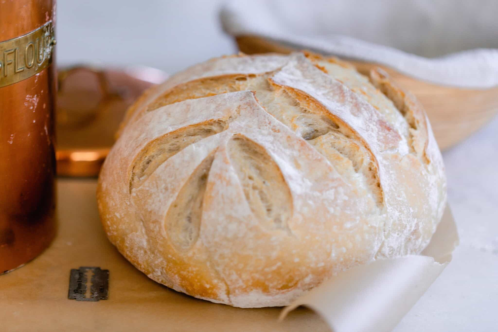Sourdough bread is a fermented bread that uses natural wild yeast from the environment that has been captured to rise and ferment, rather than relying on commercial yeast.
As the grain is fermented, the gluten and phytic acid are broken down, making it easier to digest and more nutritious. Those who are sensitive to gluten (not celiac) may be able to tolerate sourdough products (especially long fermented), due to the fermentation of the grains.
The amount of starter that is removed from the sourdough starter before feeding. You can toss it or use it for many wonderful sourdough discard recipes. Technically, you never have to actually throw it away. You can use it in discard recipes, or, once your starter is mature enough, you can just keep feeding it and using it. Make sure you don’t get too much starter or else it will be hard to maintain and keep healthy (which is the reason most discard).
This is a sourdough starter that has been fed 4-12 hours before starting the dough. It is active and bubbly. It should pass the float test when a small amount of starter is placed in a cup of water. If it floats, it is ready to use for bread.
The process of hydrating the flour with water and allowing it to rest for 15-60 minutes during the bread making process.
The first period of time a recipe rises. It is a very important step in sourdough baking. Not allowing the dough to rise enough will leave you bread that doesn’t get a good rise in the oven. Bulk ferment too long and the dough will over ferment and become a wet soupy mess. Usually, the dough should be about double in size.
Cutting a line or design on the top of the dough with a sharp utensil like a razor, lame, or knife to give bread a beautiful design. There are two kinds of scores: expansion score (a deep score that allows the bread to expand). Artistic scores: the pretty design that doesn’t have much function except to make beautiful bread.
Taking a small amount of dough, stretch it between your fingers into a square to see if it can stretch thin enough to be able to “see” through it without breaking. This is a good indicator that enough gluten formation has been created to capture a good rise and large holes in the crumb.
The final rise for the dough before baking to leaven the dough.
You will need a very active sourdough starter that passes the float test.
The dough may seem dry when it is first coming together. Resist adding more water. Use wet hands during the stretching and folding if the dough is too sticky.
The amount of time it takes for your dough to double can be determined by many environmental factors, such as the temperature in your home, the maturity of your starter, and the hydration status of the loaf.
The most accurate way to create consistent results is by using a kitchen scale. I’ve included both gram measurements and cup measurements in the recipe.
Tools you may need to make this recipe:
Feed a sourdough starter 4-12 hours before starting the dough, ensuring it is active and bubbly.
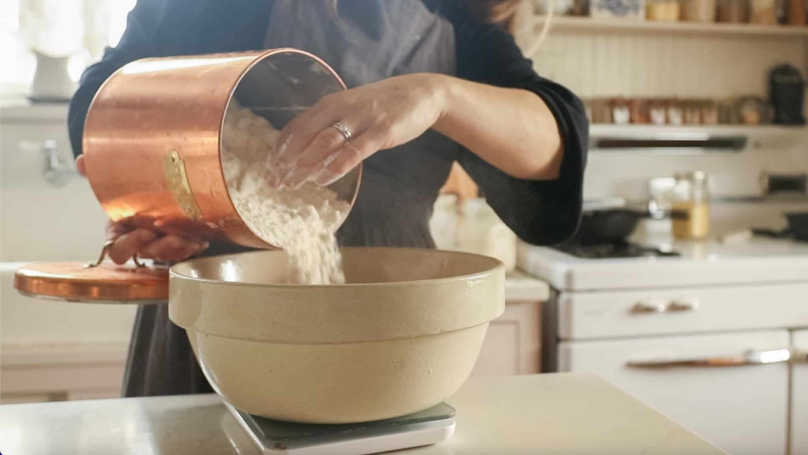Add warm water, active starter, salt, and flour to a large mixing bowl. A kitchen scale will give the most accurate results.
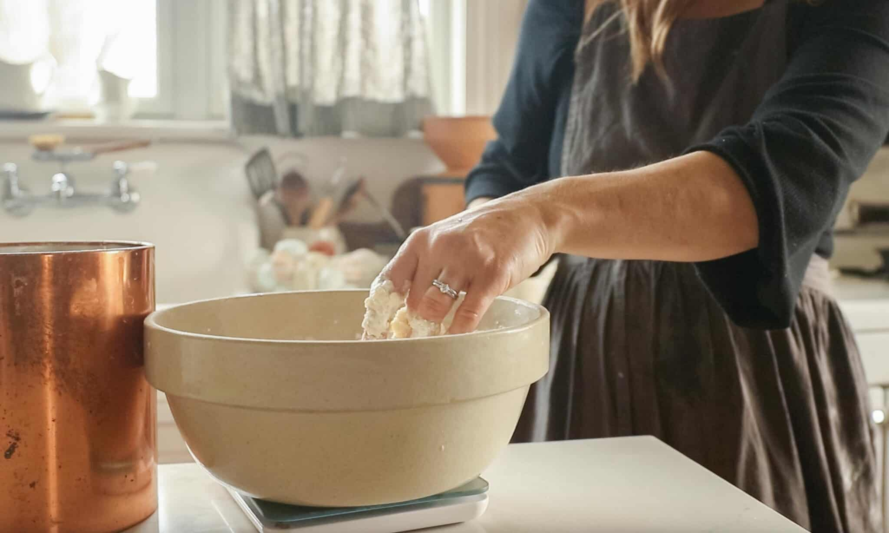Mix together with a wooden spoon or even just your hands. Cover with plastic wrap or a lid and allow to rest for 30 minutes for the water to hydrate the flour. This is the autolyse process.
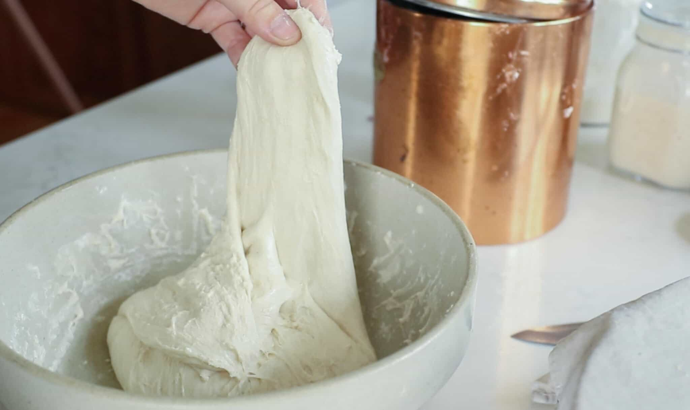Rather than kneading the dough, we are going to do a different method called the stretch and fold method. This is a way to get those desirable large holes in the crumb.
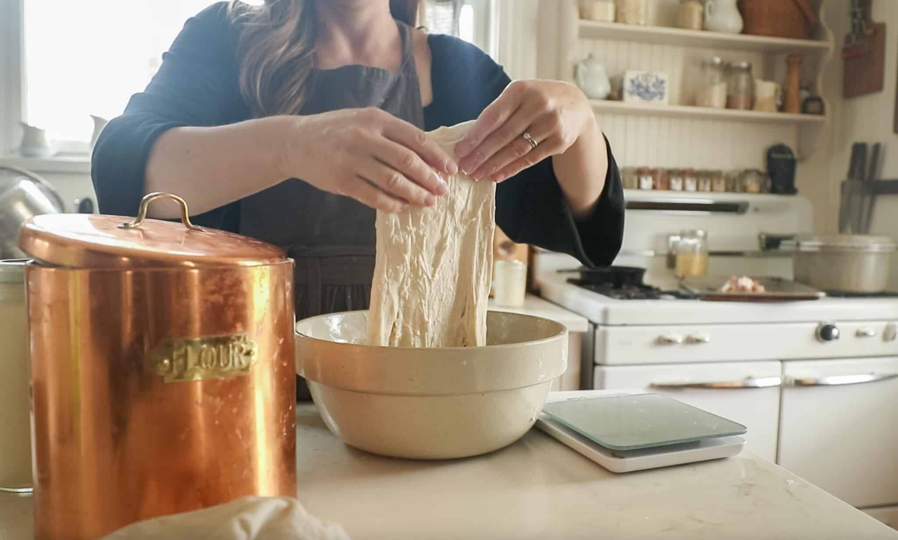Grab the edge of the dough and pull up, stretching it out as you pull upwards. This may be difficult and you may need to kind of bounce the dough to get it to stretch.
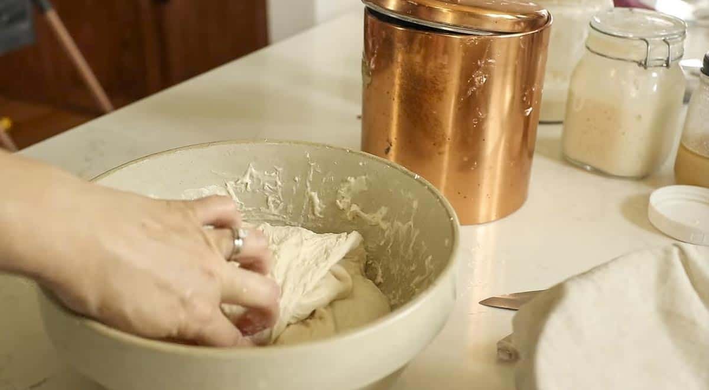Place the stretched dough back into the center of the bowl. Turn the bowl about a quarter turn and complete another stretch and fold. Repeat two more times. This is considered one round. If the dough is too sticky, dip your hand in warm water.
Cover and complete two more rounds 30 minutes apart.
Cover with a lid, damp towel, or plastic wrap. Let the dough bulk ferment in a warm place until it has doubled in size. This could be anywhere from 6-12 hours (or longer) depending on the temperature of your kitchen, maturity of your starter, etc.
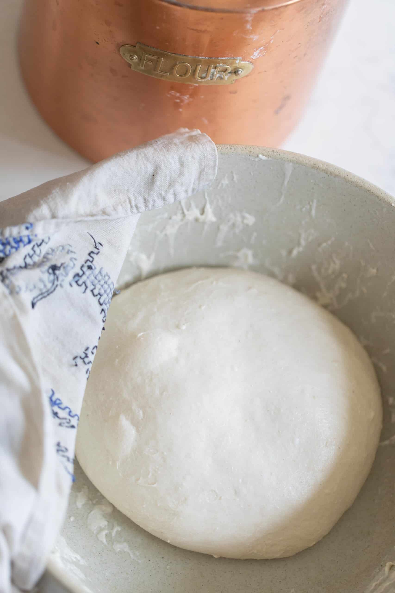Place the dough on a clean work surface that has been lightly dusted with flour.
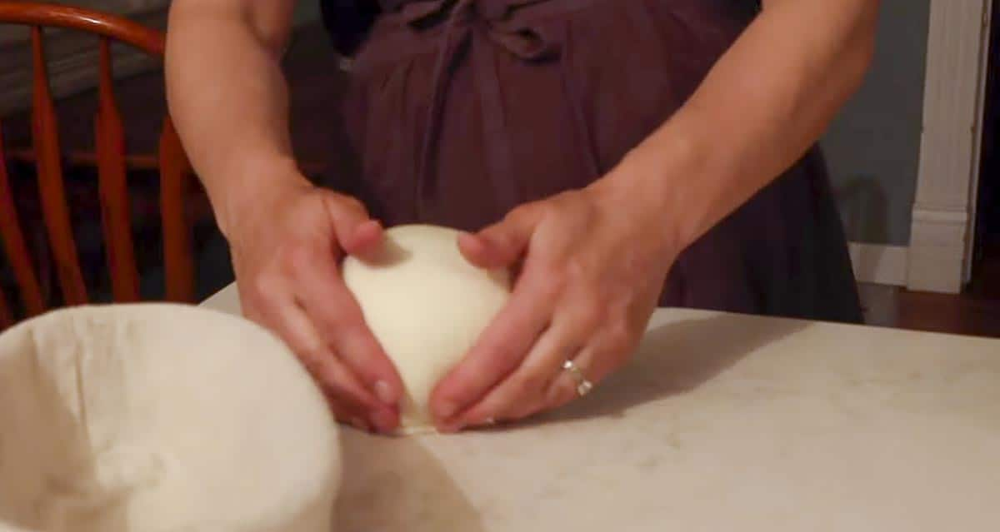Fold the dough onto itself and roll up. Then shape into a ball by gently spinning it toward you.
(Optional)Set out 15-20 minutes uncovered. This allows the surface to develop a skin, so that it doesn’t stick to the tea towel during the overnight rise.
Then, place your dough upside down (smooth side down) on the counter and shape. I do this by folding the two sides over to meet in the middle, pinch together and then repeat on the other two sides. This creates surface tension which helps give it more oven spring (a good rise).
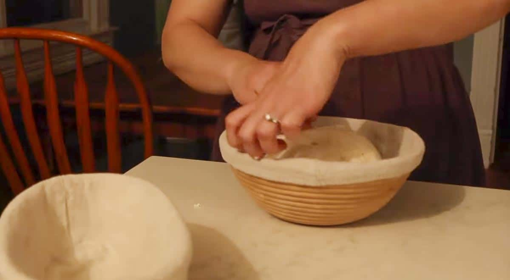Transfer to a floured banneton or bowl with a floured tea towel (typically floured with rice flour, this is not necessary and all-purpose will work just fine) seam side up. You want the smooth side or pretty side facing down in the banneton. (Remember, the crust was so it wouldn’t stick to the tea towel!)
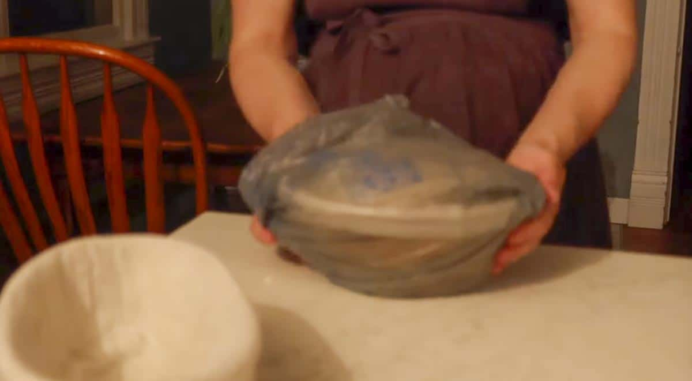Cover with plastic or place in a plastic bag and tie the ends. Let the dough rest for 12-15 hours in the refrigerator. You can also let the bread rise at room temperature for 3-4 hours. I like using the longer rise time in the refrigerator because it is easier to score and I feel like the oven spring is better.
Preheat a dutch oven to 500 degrees for 1 hour. Remove dough from the fridge right before baking.
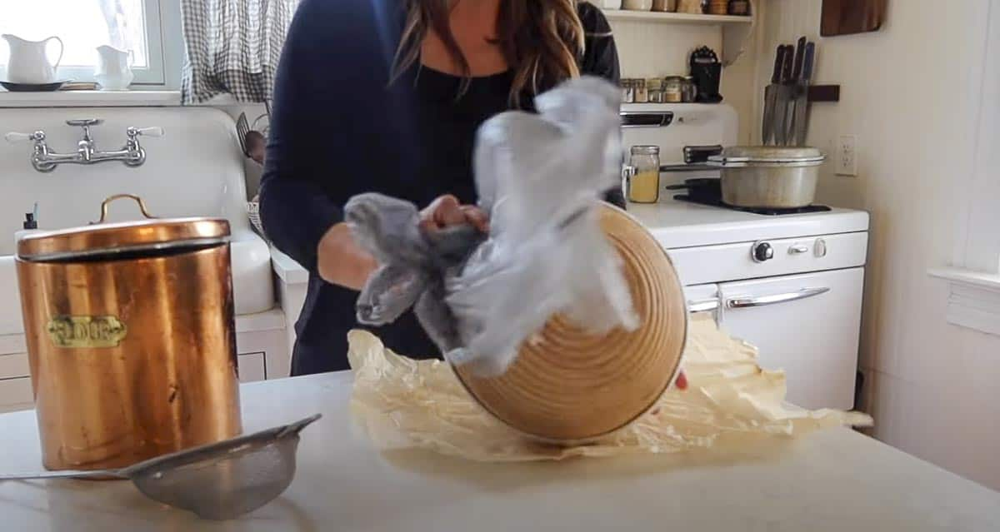Place dough on a piece of parchment paper.
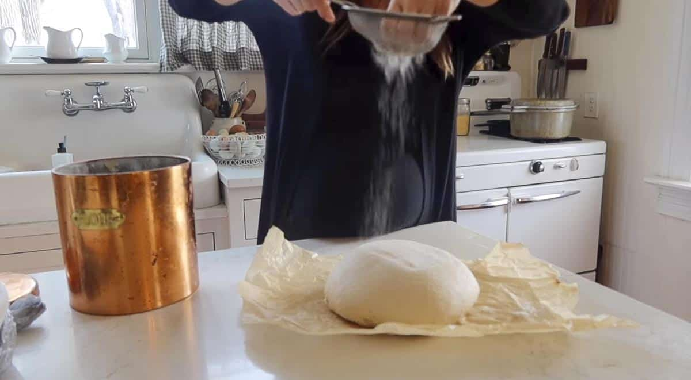 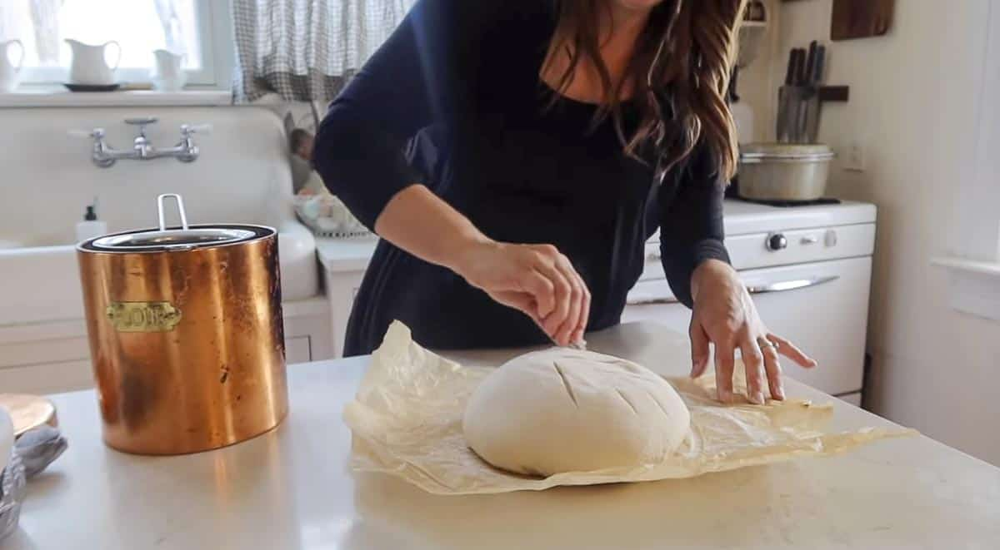Dust with flour, if desired, and score with lame or razor blade. I like to do one large score (called an expansion score) and then a cute design for the other score.
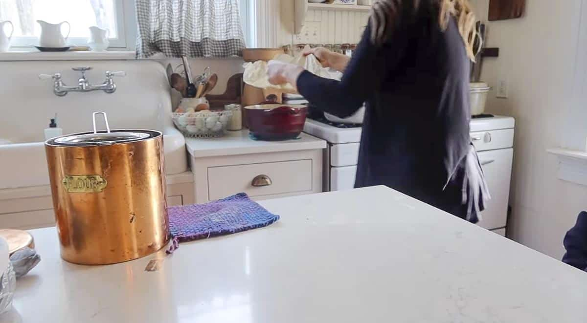Carefully, transfer the piece of parchment paper with the dough into the hot dutch oven. Careful not to burn your fingers.
Place the lid back on and place the dutch oven into the hot oven. Bake for 20 minutes.
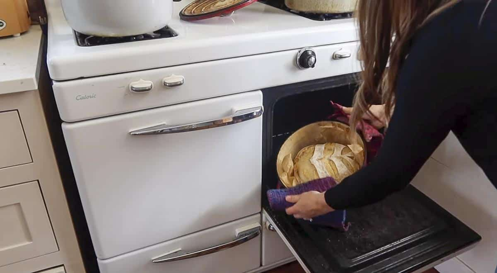Carefully remove the lid with oven mitts, turn the oven temperature down to 475, and bake an additional 15-25 minutes or until golden brown.
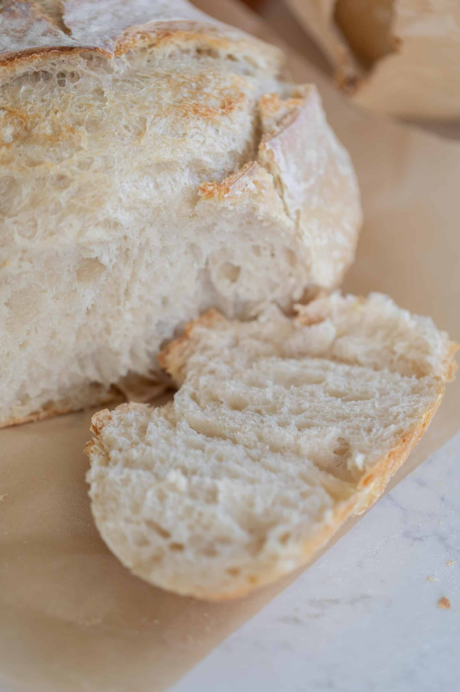Have questions or feedback? Contact https://github.com/raycolli